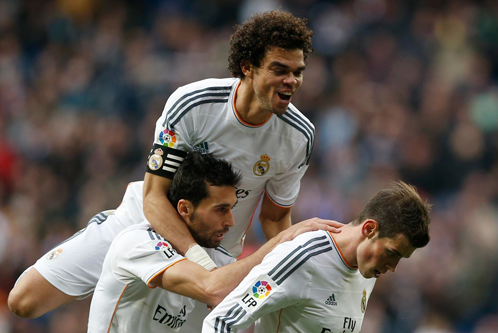

1 мая 2014
Гимн скорости или «идеальный» футбол «Реала»
Просмотр последних матчей «Реала» добавил значительную толику приятных эмоций.
После тягучего старта и парочки неприятных моментов последовала серия игр, которая
уверила в правильности пути Анчелотти. За точку отсчёта этой серии можно взять игру с «Барселоной».
6 мая 2014
Чем нам запомнится 2014-й год?
Нервный, тяжелый и обескураживающий в своем начале, вдохновляющий и
амбициозный в своем продолжении, 2013-й год в жизни «Мадрида» оказался
насыщенным, как никогда.
5 мая 2014
Серхио Рамос: «Анчелотти верит в меня»
Нервный, тяжелый и обескураживающий в своем начале, вдохновляющий и
амбициозный в своем продолжении, 2013-й год в жизни «Мадрида» оказался
насыщенным, как никогда.
27 декабря 2013
Лучшие истории от Фернандо Мансо
Фернандо Мансо работает водителем автобуса «Реал Мадрида» вот уже 14 лет.
Фернандо, которого Икер, любя, называет Френандо, пришёл на работу в 2000 году.
1 мая 2014
«Реал» официально объявил о новом «фанатском секторе»
Клуб официально объявил правила набора на новый «фанатский сектор» клуба,
который будет располагаться на южной трибуне, где раньше находился сектор «Ультрас Сур».
21 декабря 2013
Карло Анчелотти верит в новую схему 4-2-3-1
Основываясь на увиденном на последних тренировках перед игрой с «Валенсией»,
скорее всего, Карло Анчелотти останется верен той же игровой схеме.